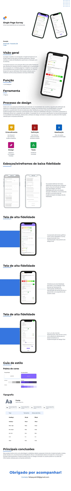

Case study
Single Page Survey
Como trocar formulários de feedback em múltiplas páginas por uma pesquisa em página única, reduzindo a fricção e aumentando a taxa de resposta dos clientes.
- DuraçãoJaneiro/23 – Fevereiro/23 (1 mês)
- FunçãoUX Designer
- FerramentaFigma
